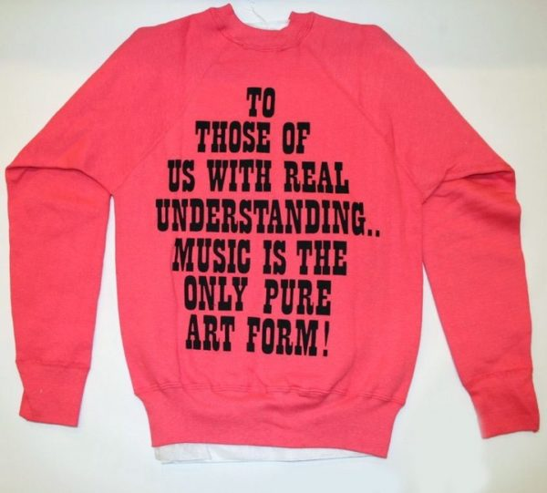

Here is the back of a vintage mid-60s sweatshirt (Schroeder’s on the front) recently shared on the @schulzmuseum Instagram, along with this quote from Charles Schulz:
Music is what keeps us sane. Music would be equivalent to a sense of humor. Music is one of the things, like the ability to laugh, that has kept mankind going for all of these thousands of years.

And here’s a Snoopy button from the late 60s, suggesting that dancing is the only pure art form. (The panel is from a Peanuts strip published on March 16, 1963.)